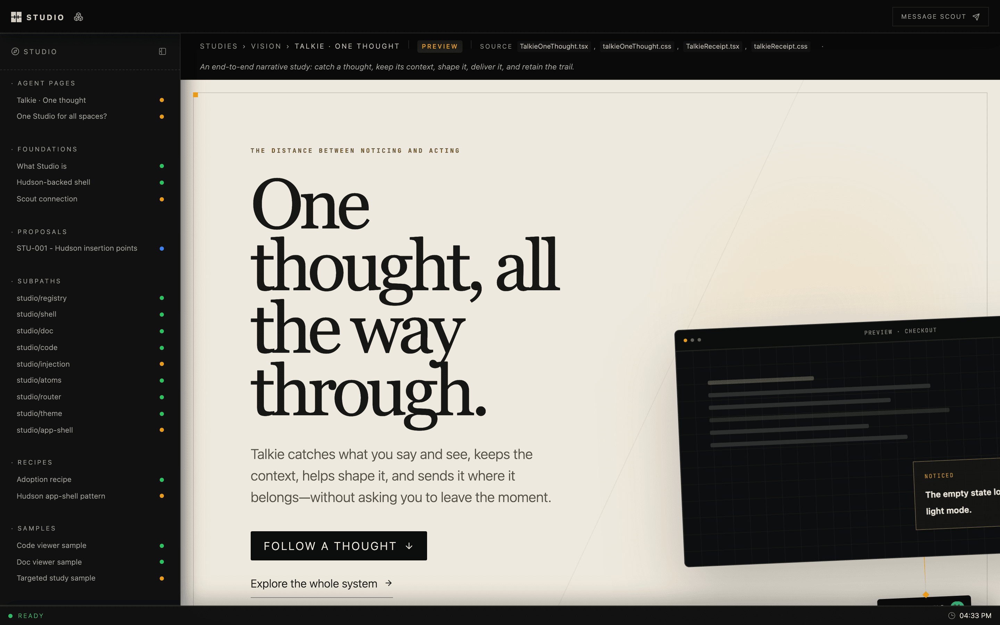

/
Studio
Studio
A design studio that lives in your repo.
Studies, engineering notes, and working UI experiments, kept beside the code they describe, and open to the agents that help you build it.

Why
Design work tends to drift away from the product: into Figma files, slide decks, and threads nobody can find a month later. Studio keeps it in the repository. A study is a React component, a doc is Markdown, and both sit next to the source they argue about. They're reviewed in pull requests and rendered with the product's real fonts, tokens, and components.
What you get
- A shell for every product. Sidebar, page strip, focus mode, a registry of pages grouped by your own taxonomy. Built on Hudson.
- Docs and code, side by side. A Markdown renderer for engineering docs and a read-only CodeMirror viewer, wired to link straight into source files.
- One URL per project.
studio devgives each repo a stable local host likemyapp.studio.local, so you stop juggling ports. - Agents as collaborators. A local MCP server lets coding agents publish pages into your studio and wait for your feedback on them.
- Flows. A spatial canvas for whole product journeys, with each screen backed by a live design surface.
- Shareable studies. Any study becomes a private Claude artifact that reviewers can comment on without cloning your repo. Their comments come back into Studio.
Review studies as Claude artifacts
Most people you want feedback from don't have your repo running. Studio bundles a study into one self-contained HTML page with React, the compiled CSS and the fonts inline. Your agent publishes that page as a private Claude artifact, and you share the link like a document.
build → publish → reviewers comment → import into Studio → reply → mirror backComments on the artifact come back as threaded feedback on the study. Replies you write in Studio are posted to the same artifact thread. The Studio host never calls claude.ai: it keeps the bookkeeping and hands your agent a plan through four MCP tools, and the agent publishes with its own Artifact tools.
bun src/artifacts/cli.ts build --all # one HTML page per shared study
studio mcp # connect your agent, then ask it to sync artifactsSee Share studies as Claude artifacts, or the live walkthrough.
Quick start
git clone https://github.com/hudsonkit/studio
cd studio
bun install
bun devOpen localhost:5191/studio. apps/studio is the
first-party studio, and it's built with this package.
Note
Studio is early and under active development. Today it's developed side by side with hudsonkit. Clone
hudsonnext tostudiobefore installing, since the workspace links it from../hudson.
Adding a studio to your product
A studio is an ordinary app route plus a registry of pages:
app/studio/[[...slug]]/page.tsx route entry
src/studio/studioRegistry.ts your sections, statuses, and pages
src/studio/StudioPages.tsx the studies themselves
docs/ source docs stay where they areimport { createRegistry } from "studio/registry";
type Bucket = "foundations" | "studies";
type Surface = "web" | "mobile";
type Status = "draft" | "preview" | "stable";
export const registry = createRegistry<Bucket, Surface, Status>({
pages: [
{
href: "/studio/studies/onboarding-v2",
label: "Onboarding, take two",
bucket: "studies",
surface: "web",
status: "preview",
source: ["src/studio/studies/OnboardingV2.tsx"],
},
],
surfaceOrder: ["web", "mobile"],
defaultSurface: "web",
bucketLabel: (bucket) => ({ foundations: "Foundations", studies: "Studies" })[bucket],
surfaceLabel: (surface) => surface,
});Then wrap your dev script so the project gets its own host:
{ "scripts": { "dev": "studio dev --port 3060 -- next dev --port 3060" } }Packages
| Import | What it's for |
|---|---|
studio/registry | Typed page registry for your taxonomy |
studio/shell · studio/app-shell | Studio layout, and the Hudson app-shell adapter |
studio/doc · studio/code | Markdown docs and the CodeMirror viewer |
studio/flows | Journey canvas, model, renderer, and server |
studio/feedback · studio/agents | Reviewer feedback and agent dispatch |
studio/injection | Swap a registered study into the live product |
studio/theme · studio/atoms · studio/router | Tokens, status pills, router adapters |
Learn more
- Docs site: every guide and reference, built with Dewey
- Claude artifacts: publish studies for review and sync comments both ways
- Reference: every subpath, the local edge, the host API, and conventions
- Cloud studios: one host on a VM serving many studios, with an agent working in place
- Agent dispatch: routing annotations to coding agents
- Component registry: audit and verify gates
- AGENTS.md: the working guide for coding agents in this repo
Development
bun test # full suite
bun run typecheck